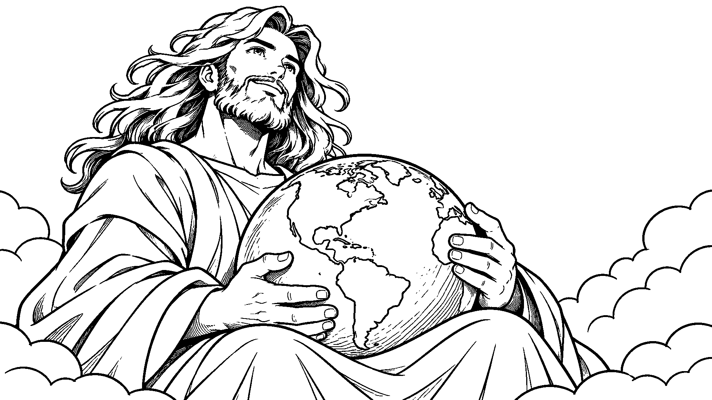

🌳🦌🌺
Génesis 1–2
El jardín de Dios
Dios preparó un jardín maravilloso, lleno de árboles, flores, ríos y animales. Allí vivían Adán y Eva y podían disfrutar de la compañía de su Creador.
Descubre historias maravillosas, conoce a sus personajes y llena cada página de color.
Elige una aventura bíblica
¿Cuál quieres colorear hoy?
Dios preparó un jardín maravilloso, lleno de árboles, flores, ríos y animales. Allí vivían Adán y Eva y podían disfrutar de la compañía de su Creador.
¡Toca una parte del dibujo para llenarla de color!
